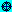

Set > Coordinate System command
Use the 3D-plot window Set > Coordinate System command or press Ctrl+Y to select the coordinate system used to plot new expressions. The command presents a dialog box with the following options:
• Rectangular: Click on this button to have subsequent expressions plotted using rectangular (Cartesian) coordinates. In rectangular plot mode the icon is displayed at the left end of the plot window status bar.
• Spherical: Click on this button to have subsequent expressions plotted using spherical coordinates. In spherical plot mode the  icon is displayed at the left end of the plot window status bar.
• Cylindrical: Click on this button to have subsequent expressions plotted using cylindrical coordinates. In cylindrical plot mode the icon is displayed at the left end of the plot window status bar.
The following summarizes how parametrically defined surfaces and explicitly defined surfaces are plotted in the three coordinate systems:
• In rectangular (Cartesian) coordinates, [x, y, z] represents the point x units from the y-z plane, y units from the x-z plane, and z units from the x-y plane. Three-element vectors of the form [x(s,t), y(s,t), z(s,t)] where x(s,t), y(s,t), and z(s,t) are expressions involving the variables s and t, plot as a parametrically defined surface. For example, in rectangular coordinates
[s, t, s^2 - t^2]
plots as a saddle shaped surface. For parametrically defined surfaces, like the above example, that have one coordinate value (i.e. the z value) dependent on the other two coordinates (i.e. the x and y values), the surface can also be explicitly defined by entering it as an equation. For example, in rectangular coordinates
z = s^2 - t^2
also plots as a saddle shaped surface.
• In spherical coordinates, [r, θ, φ] represents the point r units from the origin, θ radians from the positive x-axis, and φ radians from the positive z-axis. Three-element vectors of the form [r(s,t), θ(s,t), φ(s,t)] where x(s,t), θ(s,t), and φ(s,t) are expressions involving the variables s and t, plot as a parametrically defined surface. For example, in spherical coordinates
[2, s, t]
plots as a sphere of radius 2 centered about the origin, if s (i.e. θ) is allowed to vary from -π to π, and t (i.e. φ) is allowed to vary from 0 to π.
For parametrically defined surfaces, like the above example, that have one coordinate value (i.e. the r value) dependent on the other two coordinates (i.e. the θ and φ values), the surface can also be explicitly defined by entering it as an equation (i.e. an equation of the form r = u, where u is an expression possibly involving θ and φ). For example, in spherical coordinates
r = 2
plots as a sphere of radius 2 centered about the origin, if s (i.e. θ) is allowed to vary from -π to π, and t (i.e. φ) is allowed to vary from 0 to π.
When plotting equations of the form r = u, where u is an expression involving a single variable (i.e. θ or φ), s associates with that variable and t associates with the unused variable. For example, in spherical coordinates
r = 2·COS(φ)
plots as a sphere of radius 1 centered about the point [0, 0, 1], if s (i.e. φ) is allowed to vary from 0 to π/2, and t (i.e. θ) is allowed to vary from -π to π.
• In cylindrical coordinates, [r, θ, z] represents the point r units from the z-axis, θ radians from the positive x-axis, and z units from the x-y plane. Three-element vectors of the form [r(s,t), θ(s,t), z(s,t)] where x(s,t), θ(s,t), and z(s,t) are expressions involving the variables s and t, plot as a parametrically defined surface. For example, in cylindrical coordinates
[2, s, t]
plots as a cylinder of radius 2 centered about the origin, if s (i.e. θ) is allowed to vary from -π to π, and t (i.e. z) is allowed to vary from -1 to 1.
For parametrically defined surfaces, like the above example, that have one coordinate value (i.e. the r value) dependent on the other two coordinates (i.e. the θ and z values), the surface can also be explicitly defined by entering it as an equation (i.e. an equation of the form r = u, where u is an expression possibly involving θ and z). . For example, in cylindrical coordinates
r = 2
plots as a cylinder of radius 2 centered about the origin, if s (i.e. θ) is allowed to vary from -π to π, and t (i.e. z) is allowed to vary from -1 to 1.
When plotting equations of the form r = u, where u is an expression involving a single variable (i.e. θ or z), s associates with that variable and t associates with the unused variable. For example, in cylindrical coordinates
r = 2·COS(θ)
plots as a cylinder of radius 1 centered about the point [1, 0, 0], if s (i.e. θ) is allowed to vary from -π/2 to π/2, and t (i.e. z) is allowed to vary from -1 to 1.
Other 3D-plot Window Set commands9A4H8F